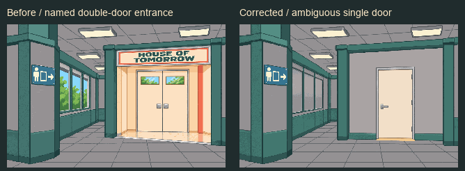
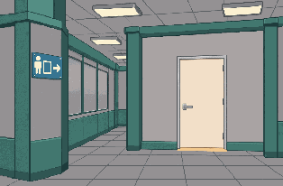
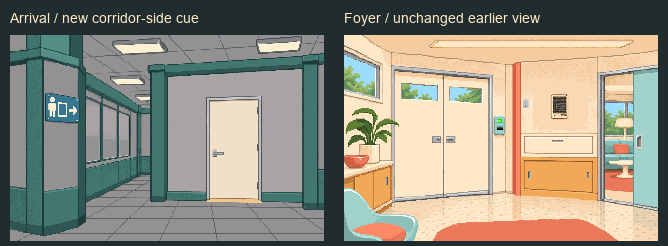
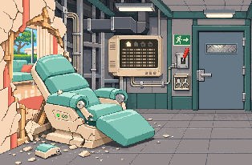
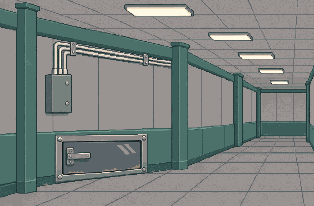
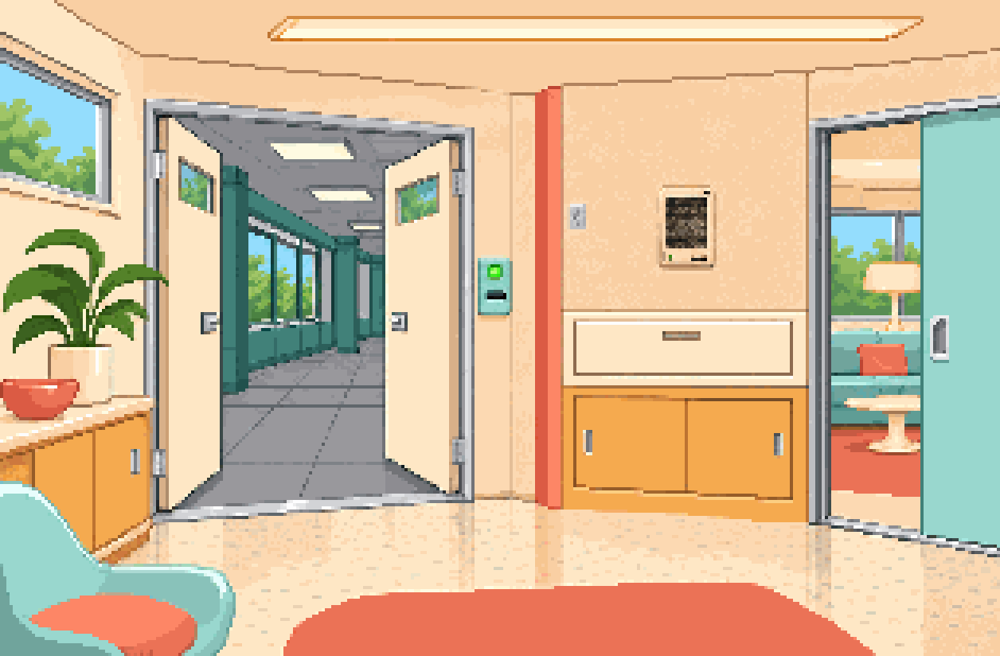
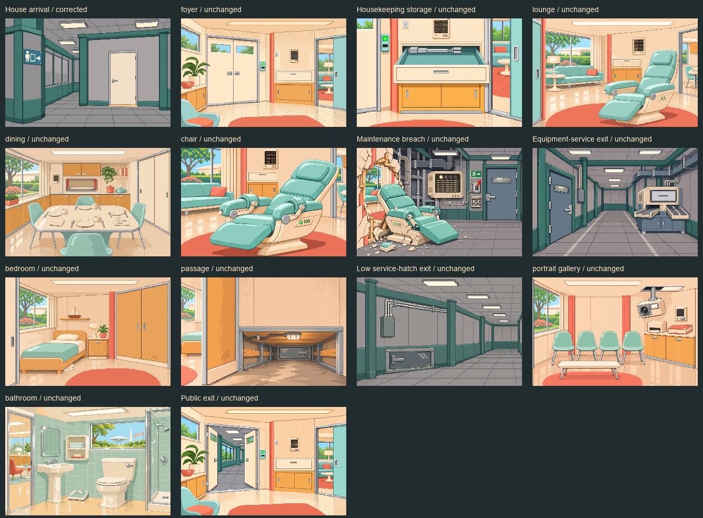

Exact4×1256×824

One ordinary solid single door; no title/marquee above the door; no scenic door windows or outdoor vista. The ambiguous nearby pictogram can be mistaken for facilities guidance. Clean indoor Exposition architecture and a restrained warm threshold remain.
Arrival is the ONLY revised environment. The other five candidates and all prior versions are unchanged. New arrival remains generated, pending review.
Corrected native candidate · Before/after PNG · Short note / continuity · Built-in imagegen prompt · Current selection / hashes · Earlier package










No story JSON, gameplay, engine, production assets or public deployment changes. The earlier named-exhibit/double-door arrival brief is superseded by this owner correction; exact door-to-foyer staging and the existing title reference in prose are recorded for separate continuity review, not silently solved by inventing another room or off-camera sign.